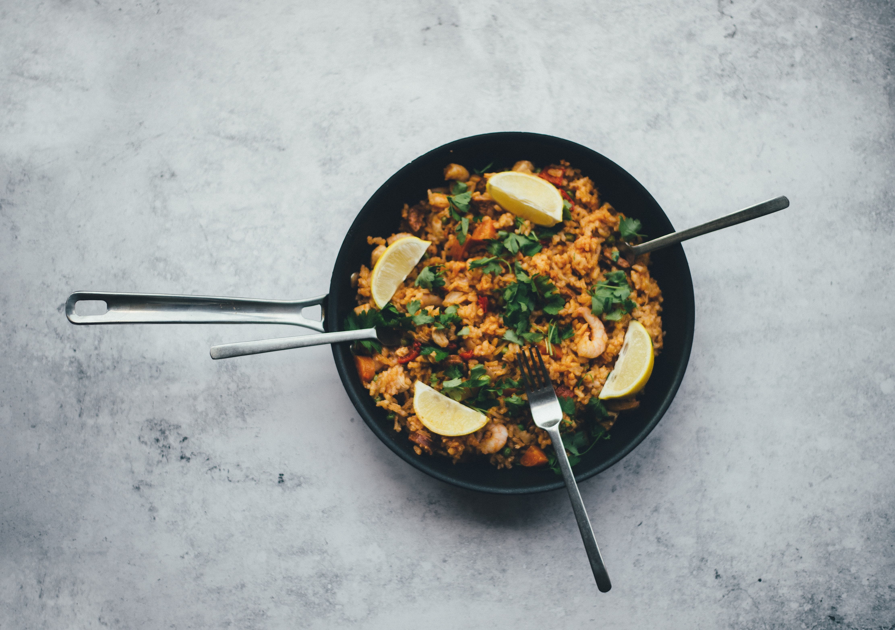

Jollof Rice

A delicious plate of Nigerian made jollof rice, served with citrus and 3 spoons, ready for consumption.
This recipe can be prepared in 45 minutes with very easy to source ingredients, get ready to have the time of your life.
Now lets get to the meat of the key steps and groceries needed to produce this delicacy.
Ingredients
- Rice
- Pepper
- Tomato
- Oil
- Water
- Salt and spices
Steps to cook
- Boil Water 1 litre of water
- Add a cup of rice
- Put a scoop of tomato paste and 50 mls of groundnut oil
- Add salt and spices to desired taste
- Voila!